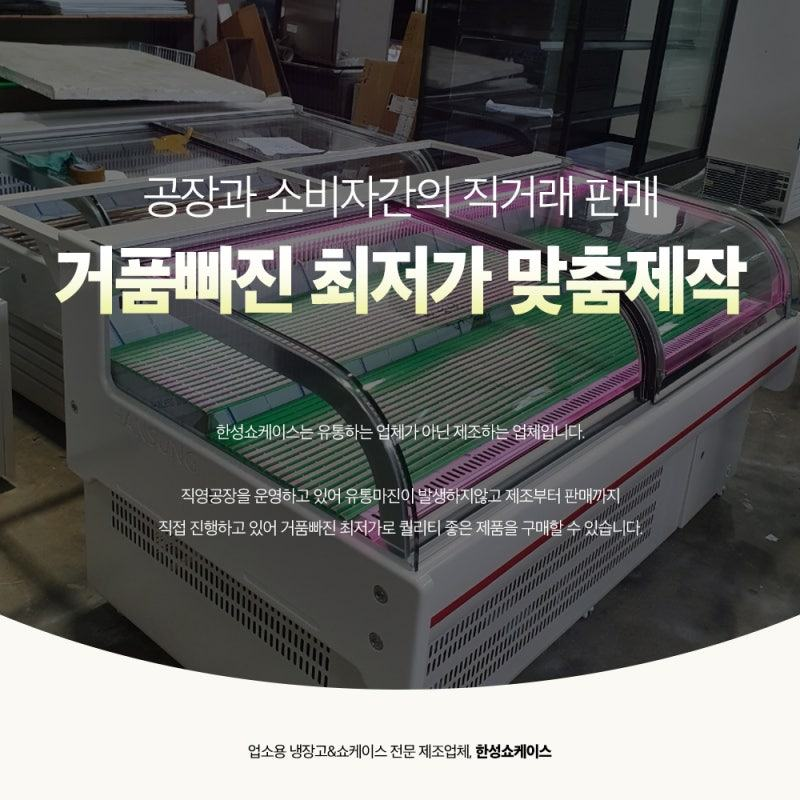
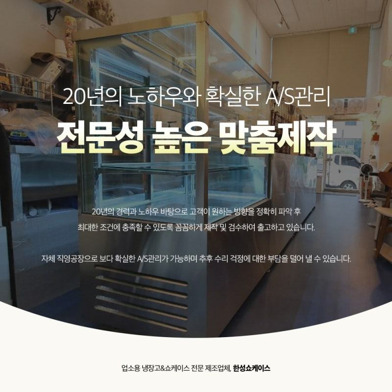

한성제품
미니쇼케이스 결로, 작은 유리장에 김이 서리는 이유와 대처

미니쇼케이스 결로는 차가운 유리가 따뜻하고 습한 공기를 만나 생기는 현상이라, 설치 자리의 열기와 습도, 문을 여는 횟수, 내부 공기 흐름을 함께 정리해야 줄어듭니다. 그래도 계속 맺힌다면 문 패킹과 냉각 방식까지 점검해 보셔야 합니다.
안녕하세요. 카운터용 미니쇼케이스부터 대형 진열장까지 맞춤으로 만드는 한성쇼케이스입니다.
1인 카페나 디저트 가게에서 계산대 옆에 미니쇼케이스를 두시는 경우가 많습니다. 그런데 여름이나 비 오는 날이면 유리에 물방울이 맺혀 안에 든 마카롱이나 음료가 잘 안 보인다는 고민을 자주 듣습니다.
미니쇼케이스는 크기가 작은 만큼 내부 공기량도 적어서, 문을 한 번 열 때마다 바깥 공기의 영향을 크게 받습니다.
게다가 카운터 위라는 자리 특성상 커피 머신 열기나 손님 입김까지 가까이 닿습니다.
오늘은 미니쇼케이스 결로가 왜 생기는지, 사장님이 바로 해 볼 수 있는 대처부터 점검이 필요한 경우까지 나눠서 정리해 보겠습니다.
1. 결로가 생기는 원리부터
차가운 음료 잔 바깥에 물방울이 맺히는 것과 같은 원리입니다. 쇼케이스 유리는 안쪽 냉기로 차가워져 있고, 바깥 공기가 따뜻하고 습할수록 유리 표면에서 수증기가 물방울로 바뀝니다.
그래서 결로는 고장이라기보다 환경 신호인 경우가 많습니다. 같은 제품이라도 습한 계절, 사람이 많은 시간, 열기 가까운 자리에서 더 심해집니다.
어느 쪽 유리에, 언제 주로 생기는지부터 관찰해 보세요.
- 바깥 유리에 맺히는지, 안쪽에 맺히는지 구분해 보세요.
- 특정 시간대나 날씨에만 심해지는지 기록해 보세요.
2. 카운터 위 자리가 만드는 결로
미니쇼케이스는 대부분 커피 머신, 제빙기, 포스기 옆에 놓입니다. 이 기기들에서 나오는 열기와 스팀이 쇼케이스 유리에 직접 닿으면 바깥쪽 결로가 크게 늘어납니다.
머신 스팀 방향과 쇼케이스 사이에 거리를 두거나 칸막이를 두는 것만으로도 차이가 납니다.
출입문 바로 앞이나 에어컨 바람이 정면으로 오는 자리도 피하시는 편이 좋습니다. 바깥 공기가 계속 들어오거나 찬바람과 더운 공기가 번갈아 닿으면 유리 온도 차가 커집니다.
작은 장비라 뒤쪽 열 배출이 막히기도 쉬우니 벽과의 간격도 확인해 주세요.


3. 문 여는 습관과 진열 방법
문을 오래 열어 두면 습한 공기가 안으로 들어와 안쪽 유리와 선반에 물이 맺힙니다. 꺼낼 상품을 먼저 정하고 짧게 여닫는 습관이 결로를 줄이는 가장 쉬운 방법입니다.
작은 쇼케이스일수록 상품을 꽉 채우기 쉬운데, 냉기가 돌 길이 막히면 칸마다 온도가 달라지고 유리 쪽에 습기가 고입니다.
상품과 유리 사이를 조금 띄우고, 뚜껑 없는 음료나 물기 있는 상품은 포장해서 넣어 주세요.
- 문은 짧게 열고 바로 닫으세요.
- 상품을 유리에 붙이지 마세요.
- 물기 있는 상품은 포장해서 넣으세요.
4. 그래도 계속된다면 점검할 것
자리와 습관을 바꿔도 결로가 줄지 않는다면 문 패킹을 확인해 보세요. 패킹이 들뜨거나 갈라지면 문을 닫아도 바깥 공기가 계속 스며듭니다.
종이 한 장을 문 사이에 끼우고 닫았을 때 쉽게 빠진다면 밀착이 약해진 상태일 수 있습니다.
냉각 방식도 영향을 줍니다. 직냉식은 성에가 쌓이기 쉬워 관리가 필요하고, 간냉식은 팬으로 냉기를 돌려 성에가 덜 생깁니다.
새로 들이신다면 매장 습도와 설치 자리를 함께 말씀해 주세요. 결로가 덜 생기는 구성을 먼저 안내해 드립니다.
체크리스트
- 결로가 생기는 위치와 시간대
- 커피 머신·스팀과의 거리
- 출입문·에어컨 바람 방향
- 문 여닫는 시간
- 상품과 유리 사이 간격
- 문 패킹 밀착 상태
현장에서 자주 보는 경우: 기성 사이즈에 자리를 맞추다 생긴 문제
미니쇼케이스를 다른 곳에서 구매하신 뒤 만족스럽지 않아 다시 찾아오시는 업주님이 적지 않습니다. 시중 기성품은 모양과 사이즈가 일률적이라 매장에 들어가지 않거나, 억지로 남는 자리에 끼워 넣게 되는 경우가 많기 때문입니다.
결로 고민도 이런 데서 시작되곤 합니다. 들어갈 자리가 머신 옆밖에 없어서 열기를 고스란히 받는 식이죠.
처음부터 놓을 자리와 크기를 맞춰 제작하면 이런 위치 문제를 피할 수 있고, 구매 후에 문제가 생겨도 A/S로 바로 대응해 드립니다.
공장에 직접 방문해 실물을 보고 고르실 수도 있습니다.




자주 묻는 질문
결로가 생긴 유리는 어떻게 닦는 게 좋을까요?
부드러운 마른 천으로 닦아 주시고, 거친 수세미나 강한 세제는 유리와 패킹을 상하게 할 수 있어 피하세요.
닦아도 금방 다시 생기면 설치 자리와 패킹부터 확인해 보세요.
안쪽에만 물방울이 생기는 건 왜 그런가요?
문을 자주 오래 열거나 물기 있는 상품을 그대로 넣었을 때 많이 생깁니다. 문 패킹이 들떠 습한 공기가 계속 들어오는 경우도 있으니 함께 점검해 보세요.
카운터 높이에 맞춘 미니쇼케이스도 제작되나요?
카운터 폭과 깊이, 위쪽 여유 높이를 알려 주시면 그 자리에 맞춘 크기로 제작할 수 있습니다. 주변 기기 배치도 함께 알려 주시면 열기를 피하는 방향까지 고려해 드립니다.
매장 조건에 맞춰 만드는 한성쇼케이스
원하시는 제품 사진과 설치할 공간 사진만 보내 주셔도 매장에 맞는 구성을 추천해 드립니다.
- 전국 240여 개 A/S 전담 센터 운영
- 본사 대량 자재 매입으로 품질 대비 합리적인 가격
- 유럽제·삼성 냉각 콤프레셔 적용
- 국내 최초 쇼케이스 전문 디자이너 상주
매장 폭과 원하는 진열 구성을 알려 주세요. 실측과 견적을 안내해 드립니다.
031-986-2458